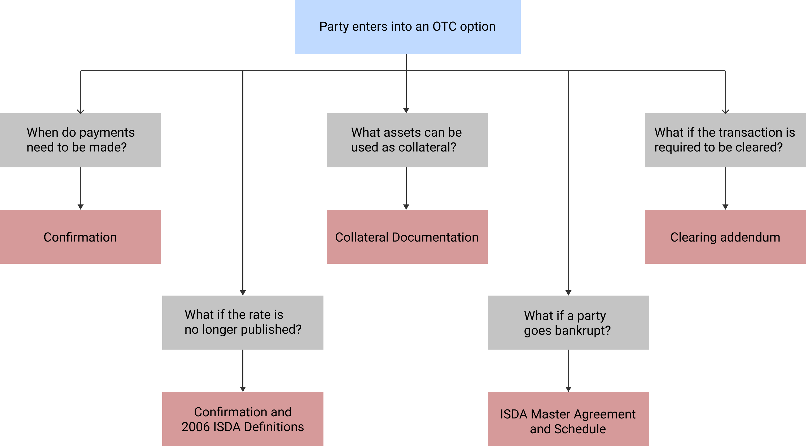
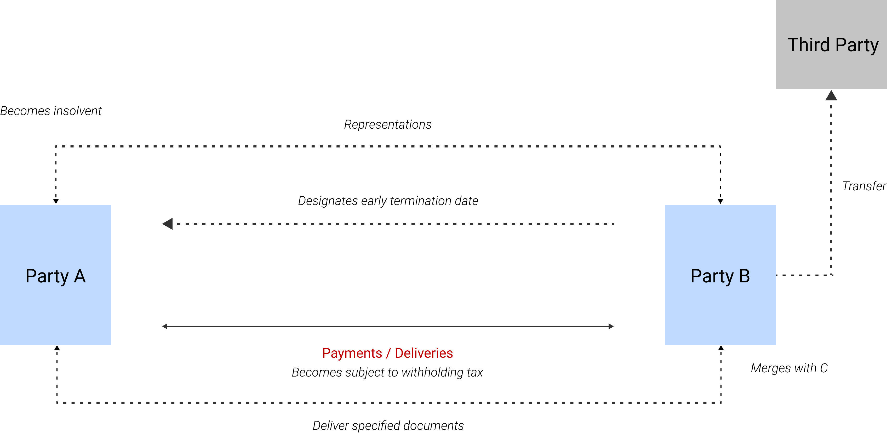

Smart Derivative Contracts
The term "smart contract" sounds geeky and complicated. However, conceptually, it is quite simple; though complicated in its creation, execution and enforcement.
With normal contracts, parties to the contract have to trust each other for their enforcement. With Smart Contracts, the trust is placed in law and mathematics (rules and logic, to be precise). The word "Smart" (in Smart Contract) means that the rules are executed automatically as per agreed logic.
To understand this better, let's suppose that you are an equity asset manager. You are afraid that the markets can go down in the next six months. To hedge the risk, you may buy a put option from a derivatives dealer in the OTC market. This OTC contract needs to be formally documented and the common documentation standard is the ISDA documentation (Master Agreement + Schedule + Confirmation + other documents). The documentation is designed to address various issues such as when do payments need to be made?, what assets can be used as collateral?, what if the closing price of the reference asset is not published anymore?, what if a party becomes bankrupt?, what if teh transaction is required to be cleared?, and other such economic and non-economic aspects. Let's further suppose that two months into the contract, the reference asset is delisted from exchange and hence its price is not available, how will the contract be settled now? Currently, with normal contracts, parties will have to agree on a method (valuation method) of valuing such contracts for settlement. If this and similar situations are not properly agreed and documented, it could lead to disputes. Dispute resolutions require extensive manual interference involving teams such as dispute resolution team, credit team, portfolio reconciliation team, front office traders, documentation team, margins team, valuation and other middle office teams. With the current high volumes of OTC derivatives, diverse set of market participants, different products, fragmented infrastructure, new regulatory rules for compliance, the cost of processing derivatives trades and dispute resolution is increasingly becoming expensive and manually intensive.

One of the ways to reduce costs and litigation and increase efficiencies is to bring about more standardisation - standardisation of products, clauses, infrastructure, methods, processes and systems. The standardisation of infrastructure, methods, processes and systems depend, to a certain extent, on the standardisation of products and clauses. The evolution of the Smart Contract is a means of achieving a sustainable, robust, scalable and simplified derivatives market.
Smart Contract codifies various situations into legally enforceable clauses executed automatically via computer code. Thus, it includes both law and computer code. If the put option contract, we discussed above, were to be executed through a smart contract then events such as non-availability of reference prices are commonly defined, agreed in documentation, and executed automatically upon its occurence without the need for parties to send notices and handling paper-work. From this perspective, a Smart Contract is neither smart not a contract. We can think of it as a simple and better way of doing business.
As can be interpreted from the above, the foundation of Smart Contracts lies in Standardisation, Digitization and Distribution of derivatives contracts. We might be a few years away from global acceptance and use of these contracts but the work on building the foundation has been going on for some time now. ISDA (International Swaps and Derivatives Association) has been working on this with various industry participants (dealers, technology companies, lawyers, buy-side firms, consultants, regualtors and others) to bring about these changes. Most importantly, ISDA's work on bringing about ISDA Taxonomy and Clause Library, ISDA Common Domain Model (CDM) and ISDA Create are solutions to common problems.
The work done by ISDA shall be covered in follow-up articles shortly. Technological developments such as Distributed Ledger, development of common valuation models, refined legal clauses are other developments towards standardisation.
Currently, we do not have a precise definition of Smart Contract. However, one of the definitions formed by Clark, Bakshi and Braine in their research paper "Smart Contract Templates: foundations, design landscape and research directions" provide us a somewhat comprehensive and meaningful definitions.
"A Smart Contract is an automatable and enforceable agreement. Automatable by computer, although some parts may require human input and control. Enforceable either by legal enforcement of rights and obligations or via tamper-proof execution of computer code."
One might argue that with increasing standarisation in processes and use of new technologies and infrastructure for STP (Straight-Through-Processing), the need for Smart Contracts may not really arise. However, the issue is that most new technologies for OTC derivatives are focussed on events that take place at the transaction level, such as automation of payment obligations or collateral transfers, etc. In other words, the focus is more on economic terms and payment mechanisms within individual transactions without taking into account the overarching contractual terms that derive from the broader contractual relationship. For instance, the following aspects may be subject to disputes;
- The provisions of representations
- The requirement to deliver certain documents to a counterparty
- A payment obligation becoming subject to a withholding tax
- The transfer of transactions as a result of a merger with another entity; and
- The insolvency and consequent default of a party

Smart Contracts are designed to take into account the above complexities by defining and executing them automatically, while keeping the crux of the ISDA Master Agreement intact. This requires both creative and intricate legal drafting and complex computer code execution, both of which depend, partially, on availability of reliable reference data and automtic settlement procedures by parties themselves or their custodians. This means, for Smart Contracts to be successfully implemented requires the collaboration of all industry participants.
It has been observed many a times that whenever there is money to be made or saved, industry always collaborates to find means to achieve the end. The promise of faster, cleaner and cheaper execution of derivative contracts is a greater good for the entire derivative industry and hence sooner or later, whether smart or not, improvements in standardisation and automation is the way forward and the industry seems fully geared towards it.
END OF MY NOTES